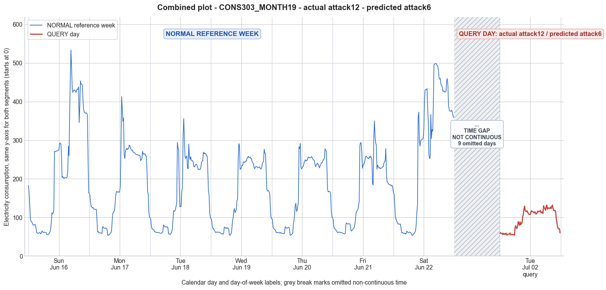

CONS303_MONTH19 · actual attack12 · predicted attack6
- Pair
- CONS303_MONTH19
- GT
- attack12
- Prediction
- attack6
- Binary GT
- attacked
- Binary Prediction
- attacked
- Source
- E010
- Parse
- stored
- Date
- 2013-07-02
- Weekday
- Tuesday
- Latency
- 3.01 min
- Tokens
- 11818

Final output
Classification: Manipulated Identified Attack: - Most Likely: Attack 6 - Confidence: High - Reasoning: The query day exhibits a hard ceiling near 132.02, with multiple identical or very close readings at that maximum, while the nighttime (low‑consumption) values match the typical baseline of the reference week. This is the classic signature of a cut‑off attack: any actual consumption above a chosen threshold is replaced by that threshold. Attack 1 (constant scaling) was ruled out because the low‑usage periods are not scaled down proportionally. Attack 3 (per‑sample random scaling) would introduce noise rather than a clean, deterministic cap, and Attack 4 (period‑specific reduction) would affect all values within a time window, not selectively clip only the highest ones. Attack_Behavior_Explanation: - **How consumption values are manipulated relative to the normal week:** The attacker selects a random cut‑off point (around 132). Every original consumption reading that exceeds this threshold is reported as 132; readings below the threshold remain unchanged. In the reference week the same weekday (Monday) has spikes reaching 355, but in the query day those spikes are flattened into a plateau at ~132. - **Impact on magnitude and trend:** Magnitude is significantly reduced (daily mean drops from ~163 to ~95). The trend is distorted: the genuine multi‑peak structure is erased, leaving a smooth, truncated profile that rises to the cap but never surpasses it, while the overnight baseline stays nearly unaltered. - **Possible technical causes:** Typically caused by false data injection attacks where the adversary reprograms the meter or intercepts data to enforce a self‑imposed maximum, possibly to avoid triggering high‑usage alarms or to remain within a cheaper tariff band.
Prompt
You are a domain expert in smart grid security and electricity theft analysis, with deep knowledge of non-technical loss (NTL) attack patterns in smart meters. You are given: 1. A plot of one week of original (normal) energy consumption for a smart meter, provided as context for the customer's typical consumption behavior. 2. A plot of one day of energy consumption for the same smart meter, which may or may not be manipulated. Below are common attack types, each defined by how consumption values are altered, their impact on magnitude and trend, and their possible technical causes. Attack 0: Generated by replacing all electricity consumption samples with zero values for the entire observation duration. Simulates a scenario where no energy usage is reported at all. May be caused by a total meter bypass or severe meter malfunction. Completely eliminates both the trend and magnitude of the consumption profile. Attack 1: Multiplies the actual energy consumption by a constant random value between (0,1). The lower the factor, the higher the severity. Can be triggered by meter bypass, magnetic interference, reverse current, and false data injection. The consumption trend remains the same but the magnitude is uniformly reduced. Attack 2: Generated by replacing consumption samples with zeros for a random duration. Also known as an on-off attack. Can be caused by full meter bypass, false data injection, and reverse current. Changes both the trend and amplitude. Attack 3: The actual consumption is multiplied by different random factors between 0 and 1, with a unique factor per sample. Similar to Attack 1 but the scaling factor varies per reading. Caused by meter bypass, magnetic interference, and reverse current. Changes both the trend and amplitude. Attack 4: Simulates energy theft over a randomly selected period within the observation window. All measurements in that period are reduced. Caused by meter bypass, magnetic interference, reverse current, and false data injection. Changes both the trend and amplitude. Attack 5: Each sample is replaced by a false value obtained by multiplying the average normal consumption by a random variable between 0 and 1, with a different variable per sample. Caused by false data injection. Produces a completely different pattern from the original consumption profile, changing both trend and magnitude. Attack 6: A random cut-off point is selected and all consumption values above it are replaced by that cut-off value. The attacker avoids exceeding a predefined maximum limit. Mainly caused by false data injection. Changes both the trend and amplitude. Attack 7: A random cut-off point is subtracted from each sample; if the result is negative, zero is reported. Similar to Attack 6 but replaces exceeding values with zero instead of the cut-off point. May be caused by false data injection or total meter bypass. Does not change the trend but reduces overall consumption. Attack 9: All samples are replaced by the average daily energy consumption, resulting in a flat constant profile. Easily detectable because constant consumption does not reflect normal customer behavior. Caused by false data injection. Eliminates all trends. Attack 10: Reverses the consumption pattern without reducing the total amount. Applicable when the electricity company uses time-varying pricing, allowing the attacker to shift high consumption to off-peak periods. Caused by false data injection. Changes the trend without decreasing total consumption. Attack 12: The attacker replaces their consumption pattern with that of a lower-consuming user. The legitimate user unknowingly pays the adversary's electricity bill. Caused by false data injection. Attack IEEE: For each 15-minute interval across the entire day, the consumer either reports the actual electricity consumption or substitutes it with zero. The result is a profile where some intervals reflect real consumption while others are zeroed out, creating an irregular pattern across the full day. May be caused by false data injection. Changes both the trend and amplitude. Given the two plots, determine: 1. Whether the day is attacked or original - compare the flagged day against the normal week and assess whether the consumption pattern is consistent with normal behavior or shows signs of manipulation. If the day is consistent with the customer's typical consumption behavior, classify it as original and provide no further analysis. If manipulation is detected, proceed to point 2. 2. Which attack type this most likely is - identify the single most probable attack and justify your choice based on how the flagged day deviates from the normal week. 3. The behavior of the identified attack - explain how the consumption values are manipulated, their impact on magnitude and trend, and the possible technical causes behind this type of attack. Output Format: Classification: - Original | Manipulated Identified Attack: (fill only if manipulated) - Most Likely: Attack X - Confidence: High | Medium | Low - Reasoning: Why it matches Attack X and why Attack Y and Attack Z were ruled out (list top 2 alternatives considered) Attack_Behavior_Explanation: (fill only if manipulated) - How consumption values are manipulated relative to the normal week - Impact on magnitude and trend - Possible technical causes
Reasoning content
We are given a reference week of energy consumption for a smart meter (7 days, each with 96 readings at 15-min intervals) and one query day. The task is to classify whether the query day is original or manipulated, and if manipulated, identify the attack type and explain. First, let's understand the normal behavior from the reference week statistics and patterns. Reference week statistics: Day 0: min=55.33, max=533.20, mean=225.90, std=147.17 Day 1: min=53.82, max=412.98, mean=180.64, std=93.28 Day 2: min=55.84, max=355.63, mean=162.74, std=87.97 Day 3: min=53.82, max=291.25, mean=161.41, std=82.10 Day 4: min=53.82, max=291.75, mean=163.20, std=84.57 Day 5: min=57.34, max=350.10, mean=166.98, std=85.77 Day 6: min=53.32, max=498.49, mean=265.29, std=165.07 Query day: min=53.84, max=132.02, mean=94.76, std=27.09 The query day's mean is much lower than any day in the reference week (94.76 vs reference means ranging from 161.41 to 265.29). The max is also very low (132.02) compared to reference maxes (lowest is 291.25). The standard deviation is also very low (27.09) compared to reference stds (lowest 82.10). So the consumption level is significantly reduced and variability is dampened. Looking at the query day's actual readings (96 values), we see: Starts with: 58.32, 60.56, 59.44, ... around 50s-60s for first few hours. Then between index ~20 to ~50: rises to 70s-80s, then 100s, peaks around 132.02, then drops back to 60s-70s at the end. The pattern doesn't have the high peaks seen in the reference week (like >200 or >300). The query day max is only 132.02, which is like the baseline consumption level of the reference week (the minimums are around 53-57, so the max is about 2.5 times the minimum, whereas in reference days, max/min ratio is much larger, e.g., Day 2: max/min=355.63/55.84=6.37). Query day max/min=132.02/53.84=2.45, so the dynamic range is much compressed. The query day pattern seems to have some variation but overall it's lower and flatter. Compare with Day 2 in the reference week (since the query day is also DAY_ID=2, which is Tuesday, same weekday as Day 2 of reference week? Actually reference week: Day 0 is Saturday (dow=6), Day 1 Sunday (dow=0), Day 2 Monday (dow=1), Day 3 Tuesday (dow=2), Day 4 Wednesday (dow=3), Day 5 Thursday (dow=4), Day 6 Friday (dow=5). So the reference Day 2 is Monday, not Tuesday. Query day is dow=1 (Monday). Wait: query day metadata: DAY_ID=2, cal_month=7, dow=1, dom=16. The reference week: Day 0: dow=6 (Saturday), Day 1: dow=0 (Sunday), Day 2: dow=1 (Monday), Day 3: dow=2 (Tuesday), Day 4: dow=3 (Wednesday), Day 5: dow=4 (Thursday), Day 6: dow=5 (Friday). So query day is also Monday (dow=1) as Day 2 of the reference week. So the most comparable day in the reference is Day 2 (Monday) with mean=162.74, max=355.63, min=55.84. The query day is drastically lower and less variable. The shape of the query day: It starts low around 53-60, then rises from around index 20 (5am?) to a mid-day plateau around 100-132, then declines from index ~80 (8pm?) to low again. That is somewhat typical for a weekday with a daytime peak, but the magnitude is far lower. In reference Day 2, we see a morning peak around index 30-40? Let's check reference Day 2 data: Day 2: 99.09, 94.57, 77.97, 70.42, 69.92, 68.41, 67.91, 62.88, 62.37, 62.37, 60.87, 61.37, 60.87, 60.87, 60.87, 59.86, 59.36, 58.85, 59.36, 60.87, 63.38, 80.48, 78.47, 75.45, 75.96, 75.96, 74.95, 75.96, 73.94, 58.35, 56.34, 57.34, 55.84, 58.85, 62.37, 69.42, 92.56, 117.71, 116.20, 116.20, 121.23, 129.28, 138.83, 294.77, 279.18, 276.66, 175.55, 127.26, 128.77, 128.77, 168.51, 176.56, 309.86, 355.63, 308.35, 257.55, 252.52, 256.54, 259.56, 226.86, 226.36, 290.24, 257.04, 250.00, 257.55, 247.99, 246.98, 246.98, 242.45, 231.39, 230.89, 234.41, 236.42, 237.93, 234.91, 229.38, 223.84, 224.35, 225.35, 224.35, 228.87, 242.45, 245.98, 246.48, 269.11, 265.09, 267.10, 264.59, 265.09, 259.56, 259.05, 222.33, 170.02, 158.95, 111.67, 100.60 That day has a morning peak around 100-120 from index 35 on, then a huge spike around index 43 (294.77, 279.18, 276.66), then a dip, then another peak around index 52 (309.86, 355.63, 308.35) and gradually declining. The query day has no such spikes; its max is just 132.02, and the pattern is much smoother. So the query day is definitely manipulated. Now we need to identify which attack type best matches. Let's consider the attack definitions: Attack 0: all zeros. Not the case, query day has non-zero values. Attack 1: multiply by constant random factor in (0,1). If applied to the whole day, the trend remains same but magnitude uniformly reduced. The query day shape might resemble the normal shape scaled down. But comparing the pattern shape: In reference Day 2, there are two prominent spikes. In query day, there is a broad hump but no sharp spikes. The query day values range only up to 132.02, while reference Day 2 had values up to 355.63. A uniform scaling factor would be something like 132.02/355.63 ≈ 0.37. If we scale all values of Day 2 by 0.37, the minimum would become 55.84*0.37 ≈ 20.7, but query day minimum is 53.84, which is close to the original minimum. So uniform scaling would reduce the baseline too, but the baseline remains similar. That suggests it's not a simple scaling of the entire day. Attack 2: on-off attack (zeros for random duration). Query day has no zeros, so not Attack 2. Attack 3: multiply by different random factors per sample. That would scale each sample differently, which could compress highs more than lows if factors are small for high values? But the description says "different random factors between 0 and 1, with a unique factor per sample." That would create a noisy, possibly varying scaled version. The query day doesn't look noisy; it's smooth. The values are not randomly scaled; they look like a real consumption pattern but capped. Attack 4: energy theft over a randomly selected period - reduction in that period. The query day shows reduction throughout the day, not just a period? The whole day is lower than normal. But it's possible that only the high-usage periods are reduced while the low-usage periods are left alone. In query day, the baseline (nighttime) is around 53-60, similar to reference night values (reference Day 2 starts at 99 but quickly drops to 60s by index ~15). Actually, reference Day 2 night values: after index ~80, it's 222.33, 170.02,... until end 100.60, so night values are higher than 50s. Wait, reference Day 2 early morning (index 0-20): 99.09, 94.57, 77.97, 70.42, 69.92, 68.41, 67.91, 62.88, 62.37, 62.37, 60.87, 61.37, 60.87, 60.87, 60.87, 59.86, 59.36, 58.85, 59.36, 60.87. So the minimum is 58.85, similar to query day's minima (53.84). So the baseline (overnight) is comparable. The daytime values, however, are massively reduced. This suggests that the attack selectively reduces high consumption values while leaving low consumption mostly untouched. That is characteristic of a cut-off attack (Attack 6 or 7) or a period-specific reduction (Attack 4), or possibly Attack 12 (replacing with a lower-consuming user's pattern). Let's examine. Attack 6: "A random cut-off point is selected and all consumption values above it are replaced by that cut-off value." So any value above a threshold is capped at that threshold. If the cut-off is around 132, then all reference values above 132 would become 132. The query day max is exactly 132.02, which might be the cut-off? And there are multiple occurrences of 132.02 (index 70? Actually we see: 130.33, 125.27, 123.03, 118.54, 128.09, 132.02, 121.34, ... later 132.02 again). So 132.02 appears a couple of times. If Attack 6, the cut-off would be a single value, and everything above becomes that value, leading to many values exactly at the cut-off. In query day, we see some values exactly 132.02, but also many values below. That might fit. However, the query day's pattern is smooth and doesn't show an abrupt plateau at exactly one value? Let's list all query values sorted: 53.84, 54.40, 54.96, 55.52, 55.52, 55.52, 56.08, 56.08, 56.08, 56.64, 56.64, 56.64, 57.20, 58.32, 58.32, 59.44, 59.44, 60.00, 60.00, 60.56, ... up to 132.02 (appears at positions: 70? Need to check). I see 132.02 at index 70 and index 80? Let's count index from 0 to 95. The query day readings: 0:58.32 1:60.56 2:59.44 3:58.32 4:56.08 5:59.44 6:56.08 7:56.64 8:58.32 9:56.08 10:59.44 11:54.40 12:55.52 13:56.64 14:56.64 15:57.20 16:60.00 17:55.52 18:55.52 19:56.64 20:54.96 21:56.08 22:55.52 23:53.84 24:73.61 25:78.67 26:72.49 27:71.93 28:76.98 29:89.33 30:84.84 31:79.79 32:88.77 33:81.47 34:84.84 35:85.40 36:102.25 37:106.75 38:121.91 39:129.21 40:117.98 41:115.73 42:115.17 43:117.41 44:112.92 45:110.11 46:107.87 47:108.43 48:107.87 49:114.04 50:117.41 51:114.61 52:115.17 53:114.61 54:111.24 55:114.04 56:114.04 57:108.43 58:110.11 59:112.36 60:116.85 61:114.61 62:115.17 63:116.29 64:117.98 65:112.36 66:112.36 67:114.61 68:110.11 69:130.33 70:125.27 71:123.03 72:118.54 73:128.09 74:132.02 75:121.34 76:125.27 77:123.59 78:123.59 79:123.59 80:126.96 81:123.03 82:129.21 83:132.02 84:123.03 85:117.98 86:117.41 87:118.54 88:115.73 89:97.76 90:87.65 91:75.30 92:71.93 93:70.09 94:70.80 95:60.00 We see max is 132.02 at index 74 and 83. There are also 130.33, 129.21, 128.09, 126.96, etc. So not all high values are exactly 132.02; there's still variation near the top. This suggests the cut-off isn't hard at exactly one value, but rather, the values are reduced but not flattened completely. Attack 7: subtract a cut-off point, negative becomes zero. Similar to 6 but replaces exceeding values with zero instead of cut-off. That would give zeros for high values, not the case here. Attack 12: replace with a lower-consuming user's pattern. Could be, but the pattern looks like a typical household with a daytime hump, so it could be a real pattern from a lower-consuming household. The query day pattern has a shape that seems plausible: consumption rises in the morning, peaks around midday, then falls. That's typical. The question is whether it's consistent with the original customer's pattern scaled down with a limit or it's a completely different pattern. Compare the shape of the query day with reference Day 2's shape. Reference Day 2 had a bimodal peak: one around 8am-9am (indices 35-45) and another around 12-1pm (indices 50-55). Query day has a single broad peak from about 9am to 3pm (indices 36 to 75), with the maximum at 132.02 around 6pm? Actually index 74: 132.02, which is around 6:30pm? 74*15min = 1110 min = 18.5 hours, so 6:30pm. There's a high in the evening. The pattern isn't exactly a copy of the reference day, but it could be a different normal day. However, the mean and max are so drastically lower than any day in the reference week that it's almost certainly manipulated. Attack 5: each sample replaced by false value = average normal consumption * random variable (0,1). Average normal consumption of reference week? Overall reference week mean might be around (225.90+180.64+162.74+161.41+163.20+166.98+265.29)/7 ≈ 194.88. If multiplied by random, values would be between 0 and ~195. The query day max is 132, so possible. But Attack 5 says "Produces a completely different pattern from the original consumption profile, changing both trend and magnitude." The query day pattern does have a trend (low at night, high day) similar to normal, so not completely different pattern. The shape is somewhat similar. So Attack 5 is less likely. Attack 4: energy theft over a randomly selected period within the observation window. All measurements in that period are reduced. For example, if the period is chosen as daytime hours, the reduction could be a scaling down. But the description: "Simulates energy theft over a randomly selected period... All measurements in that period are reduced." It might reduce by a factor or by a constant? It says "reduced", not necessarily scaled. It might be a uniform reduction or zero? But the query day shows reduction across the whole day, not just a period. The nighttime values are similar, but daytime values are reduced. That could fit if the period is daytime. However, daytime values are not uniformly reduced by a constant amount (which would shift them down). If you subtract a constant from all daytime values, the shape remains but shifted down. For example, if we take reference Day 2 daytime values (indices 20-80) and subtract a constant to bring the max down to 132, then the lower values might become negative. In query day, daytime values start at 73 and go up, which is plausible. But comparing indices: reference Day 2 at index 20: 63.38, query index 20: 54.96; reference index 30: 92.56, query index 30: 84.84; reference index 40: 121.23, query index 40: 117.98; actually query index 40: 117.98, reference index 40: 121.23, which is very close. That's interesting: at index 40, reference is 121.23, query is 117.98, nearly the same. Reference index 41: 129.28, query 41: 115.73 (lower). Reference index 42: 138.83, query 42: 115.17 (much lower). Reference index 43: 294.77, query 43: 117.41 (massively lower). So the query values up to around index 40 are somewhat comparable to reference Day 2, but beyond that they get capped. Looking at reference Day 2, there's a sudden spike at index 43-44 (294.77, 279.18). Query day never goes above 132. So it's as if the high spikes have been limited to a maximum around 132. That is precisely Attack 6 (cut-off) behavior: any value above a threshold is replaced by the threshold. If the threshold is around 130-132, then all values above that become ~132. That would explain why there are multiple occurrences of 132.02 and values close to it, while lower values remain untouched. The fact that lower values are similar to reference (compare index 36 reference: 92.56, query: 102.25; index 37 ref: 117.71, query: 106.75; index 38 ref: 116.20, query: 121.91; they are in the ballpark) suggests that the low-consumption periods are unchanged. This fits Attack 6: a cut-off is applied. The cut-off value appears to be around 132.02. Check other Attack candidates: Attack 7 would substitute above-cutoff values with zero, not the case. Attack 1: constant scaling would reduce low values too, but low values are not reduced proportionally. For example, at index 36, reference 92.56, query 102.25 (higher), so not a scaling. Attack 3: per-sample random factors would introduce noise, but the query day is smooth and doesn't look like random scaling; it maintains a clear trend. Attack 4: period-specific reduction - if it's scaling within a period, we'd see low values in that period also reduced, but they aren't significantly reduced. If it's subtraction, it would shift values down uniformly, making low values possibly negative or very low, which we don't see. Attack 12: replacing with another user's pattern would give a completely different shape, but the shape of the query day in terms of timing of rise and fall is somewhat similar to the reference, with low at night, rising in morning, but the evening peak is unusual (reference Day 2 had a gradual decline from 2pm onwards, while query day has a bump at 6:30pm). That could be a different user's pattern. But given how close some values are to the reference, it might just be the original pattern capped. Let's more systematically examine a segment before the spike. Reference Day 2 index 35-42: 69.42, 92.56, 117.71, 116.20, 116.20, 121.23, 129.28, 138.83. Query day index 35-42: 85.40, 102.25, 106.75, 121.91, 129.21, 117.98, 115.73, 115.17. They are not identical but follow a similar increasing trend. The values are close until index 42 (ref 138.83, query 115.17). Then at index 43, ref jumps to 294.77, query only 117.41. So it seems that the original pattern had high spikes that are now missing, replaced by values around 110-132. This strongly suggests a cut-off attack where the maximum reported consumption is limited. The cut-off point might be selected randomly and values above it are capped. Therefore, Attack 6 is the most likely. Let's verify if Attack 1 could be ruled out: If we try to find a constant factor that maps reference Day 2 to query day, we'd need to scale high values down but leave low values unchanged, which is impossible with a single factor. So Attack 1 is ruled out. Attack 3: per-sample random scaling could produce something similar if the random factors for low values are near 1 and for high values are much smaller. But the description says "different random factors between 0 and 1, with a unique factor per sample." That would likely introduce more noise rather than a clean cap. The query day values are relatively clean with a clear structure, not random. Also, the presence of almost identical values (e.g., multiple 132.02, 123.03, 123.59) suggests a deterministic cap rather than random. So Attack 3 is less likely. Attack 4: period-specific reduction. If it's a scaling within a period, the period would need to be exactly the high-usage times. The attacker might choose a period covering the spikes. But then within that period, all values are reduced by some factor. If the factor is constant, the shape would be preserved but scaled down; we see the spike shape is gone (the peak is a plateau). So not a simple scaling. It could be that the period is reduced by subtracting a constant, but that would shift the whole period down, making low values in that period very low. However, in the daytime period, the minimum is around 73, which is higher than night, so not extremely low. If we subtract, say, 150 from the spike values, they'd become around 144, 129, etc., but the values around index 43-44 would drop from 294 to 144, which is close to the observed 117-132? Actually, 294-150=144, 279-150=129. Query day has 117.41 at index 43 and then later 114.04, etc. Not exactly a constant subtraction. So not a clean subtraction either. Thus Attack 4 is less likely. Attack 6 explicitly describes: "A random cut-off point is selected and all consumption values above it are replaced by that cut-off value. The attacker avoids exceeding a predefined maximum limit." This perfectly matches the observation: the maximum reported is around 132, and high original values that would exceed this are capped to this value, creating a flat top while lower values remain unchanged. Confidence: High, because the pattern of a capped maximum with lower values matching the normal baseline is distinctive. Now, Attack_Behavior_Explanation: "How consumption values are manipulated relative to the normal week" – The attacker has set a maximum consumption threshold (cut-off point) at approximately 132. Any actual consumption above this threshold is reported as the threshold value, while consumption below remains unaltered. This results in a day profile that resembles the original pattern for low-usage periods but flattens any peaks above the threshold, reducing overall magnitude and changing the trend by removing high-consumption spikes. "Impact on magnitude and trend" – Magnitude is reduced, as the total daily consumption drops (mean from ~163 to ~95). Trend is altered: the original multi-peak structure is lost, replaced by a plateau at the cut-off level during peak usage times. "Possible technical causes" – Mainly caused by false data injection attacks where the attacker manipulates the meter's reported readings to stay below a certain limit, perhaps to avoid triggering usage alerts or to remain within a lower tariff bracket. Output format: Classification: Manipulated. Identified Attack: Attack 6. Confidence: High. Reasoning: The query day shows a sharp maximum around 132 with many readings at or near this value, while low-usage periods (nighttime) are similar to the reference week. This indicates a cap is applied to all values above ~132, consistent with Attack 6. Attack 1 (uniform scaling) was ruled out because low values would also be scaled down, which they are not. Attack 3 (per-sample random scaling) would produce noisier, less structured data and unlikely to produce a clear cap with identical repeated values. Attack 4 (period-specific reduction) would either scale or shift a period, not cap at a specific threshold across the day. Attack_Behavior_Explanation: ... (as above). I'll now write the final answer.